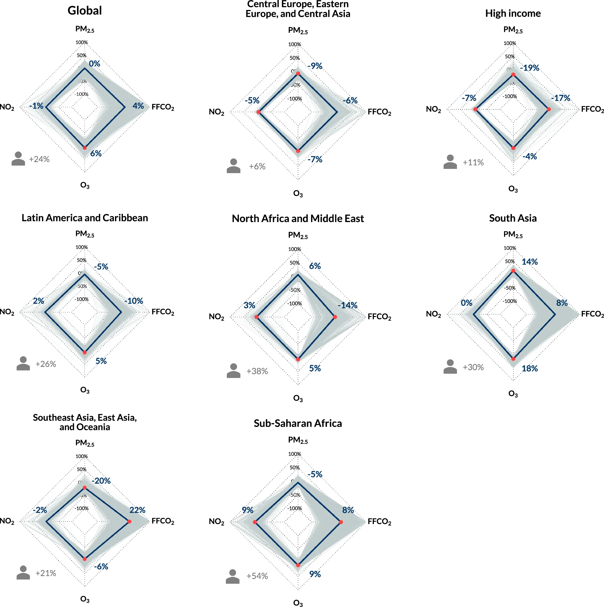
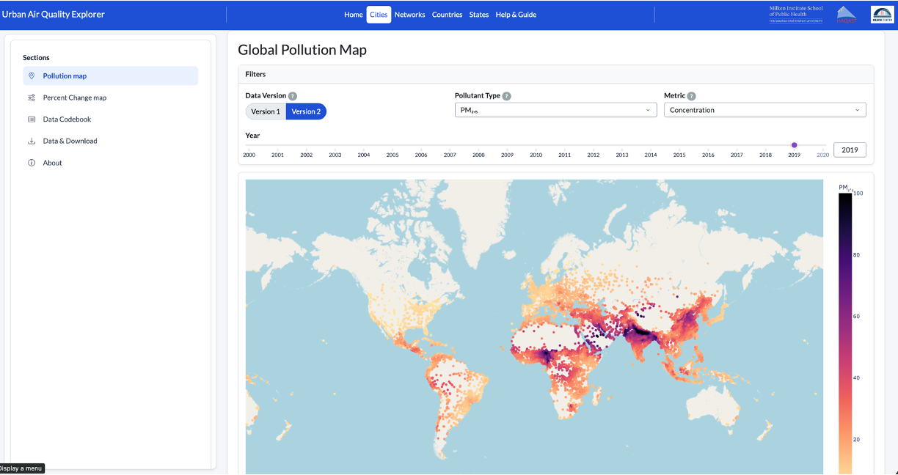

Soo-Yeon Kim
Soo-Yeon Kim
13,000 Global Cities
Soo-Yeon Kim

Image source: https://unsplash.com/photos/fish-eye-photography-of-city-KRELIShKxTM
More than half of the world's population lives in cities, where air pollution and greenhouse gas emissions are concentrated. How have pollution and emissions changed in urban areas worldwide over two decades, and how do a city's socioeconomic conditions shape the disease burden its residents face?
As part of the 13,000 Cities Project, I led the development of a harmonized global database of PM₂.₅, NO₂, ozone, and CO₂ emissions for more than 13,000 urban areas, built from large geospatial datasets, and analyzed long-term trends from 2000 to 2020.
In the next phase, I'm estimating city-level health burdens from PM₂.₅, NO₂, and ozone using Global Burden of Disease methodologies and examining how socioeconomic factors shape pollution-related inequities across regions.

Figure. Percent changes in population-weighted annual average PM2.5, NO2, and OSDMA8 (O3) concentrations and FFCO2 per capita in urban areas from 2005-2007 to 2017-2019. Grey lines indicate percent changes in individual cities located within each region, and navy lines indicate percent changes of averaged values across all cities in each region. Red dots indicate statistically significant monotonic trends between 2005 and 2019. Person icons indicate percent changes in total population from 2005-2007 to 2017-2019. Values above 100% were consolidated as 100%, respectively. Only urban areas with full time-series available between 2005 and 2019 for every pollutant were included. Global: n = 12,730; Central Europe, Eastern Europe, and Central Asia: n = 605; High income: n = 1,243; Latin America and Caribbean: n = 885; North Africa and Middle East: n = 1,185; South Asia: n = 3,858; Southeast Asia, East Asia, and Oceania: n = 2,789; and Sub-Saharan Africa: n = 2,165.
Research outputs from the 13,000 Cities Project can be explored interactively on our group's Urban Air Quality platform, which I redesigned and maintain: urbanairquality.online.

Screenshot of the Urban Air Quality platform. Click to explore the live site.